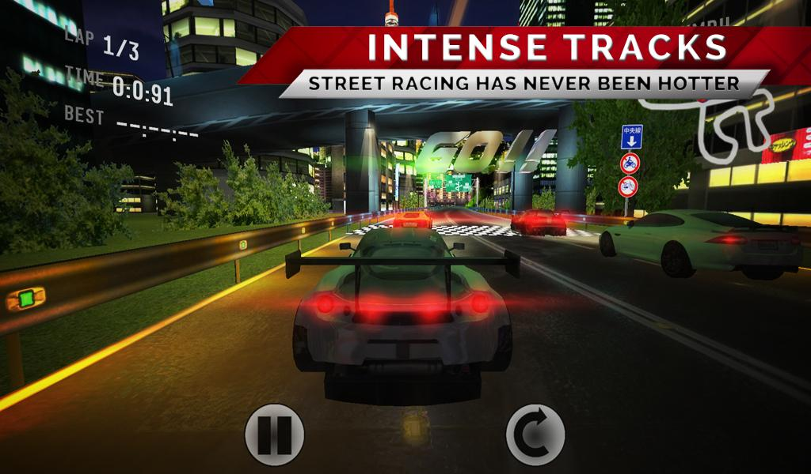
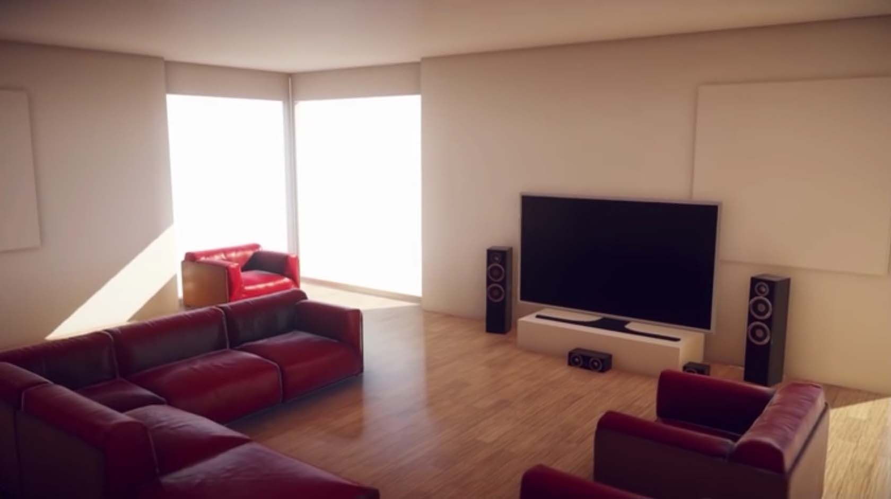
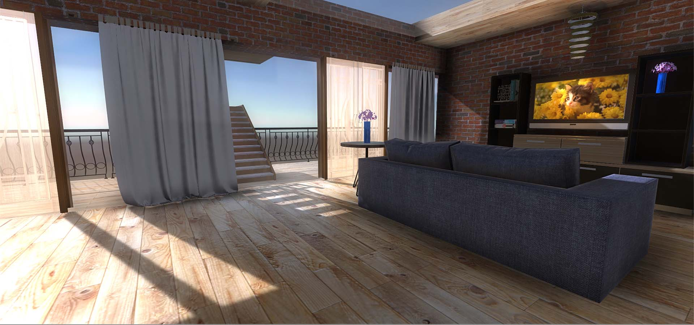
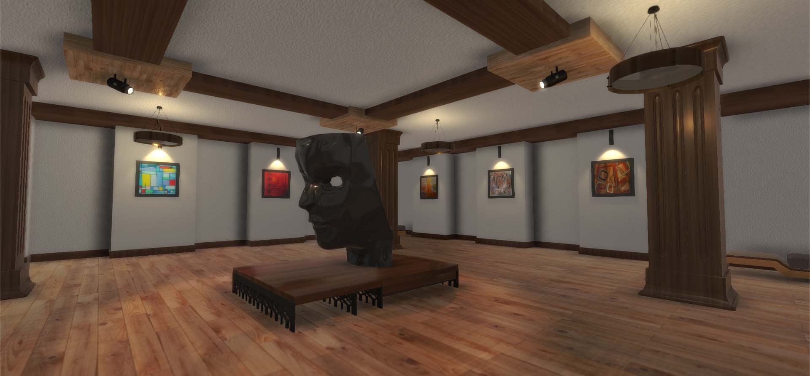
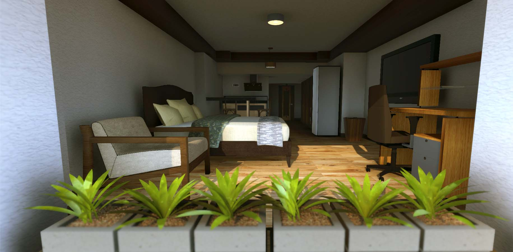

<!DOCTYPE html>
<html lang="en">

<head>

    <meta charset="utf-8">
    <meta http-equiv="X-UA-Compatible" content="IE=edge">
    <meta name="viewport" content="width=device-width, initial-scale=1">
    <meta name="google-site-verification" content="9UCBtBRg7D0bgeyjFWmZPQQVYCOc6FDR-5rm6oLICt0" />

    <!-- for Google -->
    <meta name="description" content="Chasing photorealism with Unity3D Physically Based Rendering" />
    <meta name="keywords" content="Unity3D, PBR, Photorealistic, graphics, Aechitecture" />

    <meta name="author" content="Vatsal Ambastha" />
    <meta name="copyright" content="Vatsal Ambastha" />

    <!-- for Facebook -->
    <meta property="og:type" content="article" />
    <meta property="og:url" content="http://www.vatsalambastha.com/blog/chasing-photorealism/page.html" />

    <meta property="og:title" content="Photorealism with Unity3D PBR" />
    <meta property="og:description" content="Chasing photorealism with Unity3D Physically Based Rendering" />
    <meta property="og:image" content="http://www.vatsalambastha.com/blog/chasing-photorealism/img/header-bg.jpg" />

    <meta property="og:site_name" content="VatsalAmbastha.com"/>
    <meta property="article:publisher" content="https://www.facebook.com/vatsalAmbastha" />
    <meta property="article:author" content="https://www.facebook.com/vatsalAmbastha" />
    
    <!-- for Twitter -->          
    <meta name="twitter:card" content="summary" />

    <meta name="twitter:title" content="Photorealism with Unity3D PBR" />
    <meta name="twitter:description" content="Chasing photorealism with Unity3D Physically Based Rendering" />
    <meta name="twitter:image" content="http://www.vatsalambastha.com/blog/chasing-photorealism/img/header-bg.jpg" />

    <link rel="shortcut icon" href="../../img/ico.png" type="image/png">

    <!-- Bootstrap Core CSS -->
    <link href="../../css/bootstrap.min.css" rel="stylesheet">

    <!-- Custom CSS -->
    <link href="../../css/clean-blog.min.css" rel="stylesheet">

    <!-- Custom Fonts -->
    <link href="http://maxcdn.bootstrapcdn.com/font-awesome/4.1.0/css/font-awesome.min.css" rel="stylesheet" type="text/css">
    <link href='http://fonts.googleapis.com/css?family=Lora:400,700,400italic,700italic' rel='stylesheet' type='text/css'>
    <link href='http://fonts.googleapis.com/css?family=Open+Sans:300italic,400italic,600italic,700italic,800italic,400,300,600,700,800' rel='stylesheet' type='text/css'>

    <!-- jQuery -->
    <script src="../../js/jquery.js"></script>

    <!-- Bootstrap Core JavaScript -->
    <script src="../../js/bootstrap.min.js"></script>

    <!-- Custom Theme JavaScript -->
    <script src="../../js/clean-blog.min.js"></script>    

    <!-- HTML5 Shim and Respond.js IE8 support of HTML5 elements and media queries -->
    <!-- WARNING: Respond.js doesn't work if you view the page via file:// -->
    <!--[if lt IE 9]>
        <script src="https://oss.maxcdn.com/libs/html5shiv/3.7.0/html5shiv.js"></script>
        <script src="https://oss.maxcdn.com/libs/respond.js/1.4.2/respond.min.js"></script>
    <![endif]-->

    <!-- page generation --> 
    <script src = "../../js/commons.js"></script>
    <script src = "../../js/blogs.js"></script>

</head>

<body onLoad = "Init()">    

    <!-- NAVIGATION BAR -->
    <div id="nav-bar"></div>
    
    <!-- HEADER -->
    <div id="header"></div>

    <!-- MAIN CONTENT -->
    <div class="container">
        <div id = "blog-entry-list"></div>
        <div id="contents"></div>
    </div>


    <!-- FOOTER -->
    <footer>
        <div id="page-footer"></div>
    </footer>

    <script>
        var BLOG_INDEX = 1;

        function Init(){
            generateTitle();
            generateNavBar();
            generateHeader();   
            generateFooter();
            generateContent();
        }

        function generateTitle(){
            document.title = "";
            document.title += blogPosts[BLOG_INDEX][0]; 
            document.title += " | Vatsal Ambastha's Blog";
        }

        function generateNavBar(){
            var aNavBarBuilder = new NavBarBuilder(
                new NavBarTextBuilder('', '#000000', '#'),
                new NavBarTextBuilder('HOME', '#333333', '../../index.html'),
                new NavBarTextBuilder('ABOUT', '#333333', '../../about.html'),
                new NavBarTextBuilder('HIRE ME', '#333333', '../../hire-me.html')
            );

            document.getElementById("nav-bar").appendChild(createNavBar(aNavBarBuilder));
        }

        function generateHeader(){
            var header = blogPosts[BLOG_INDEX][0];

            var aHeaderBuilder = new HeaderBuilder('img/header-bg.jpg', header, '')
                .setTitleColor('#fafafa')
                .setSubTitleColor('#fafafa')
                .build();
            
            document.getElementById("header").appendChild(createHeader(aHeaderBuilder));
        }

        function generateFooter(){
            document.getElementById("page-footer").appendChild(createFooter());
        }

        function generateContent(){
            document.getElementById("contents").appendChild(createFromHTML(''+
                '<p align="justify">' +
                    // NOTE: WRITE FROM HERE
                    ' Much of my game development work since I started has been on mobile. While I\'ve certainly had fun doing that, I have realized that' +
                    ' it has kept me from pushing myself further as far as pursuing graphical realism goes.' +

                    '<br>'+
                    '<br>'+

                    ' When it was released, people told me that <a href="https://play.google.com/store/apps/details?id=com.firexit.speedstreettokyo">Speed Street: Tokyo</a> had pretty' +
                    ' good graphics for a mobile game in 2014. ' + 


                    '<br>' + 
                    '<br>' + 

                    '' + 
                    '<blockquote>Speed Street: Tokyo was okay.</blockquote>' + 


                    '<br>' + 

                    ' But there\'s the problem right there.' + 

                    '<br>'+
                    '<br>'+

                    'It is only pretty good. For a mobile game. In 2014.' + 

                    '<br>' + 
                    '<br>' + 

                    ' I recently thought of diversifying into architectural visualisations, especially because there is a lot of demand for them owing to the VR craze.' +
                    ' Now, these visualizations need to be realistic looking, so I looked up some tutorials and' +
                    ' found a nice timelapse video <a href="https://www.youtube.com/watch?v=MX1qRM-lTEU" target="tut"><u>here</u></a>. Below is the end result of the video.' +

                    '<br>' +
                    '<br>' +

                    '' + 
                    '<blockquote>Such skills. Much wow.</blockquote>' + 

                    '<br>' + 

                    ' I was impressed. The video creater managed to assemble that in less than half an hour, assuming the video is sped up 4x.' + 
                    ' But then, I thought I also could do this. After all it is just a sequence of steps in a software I am already so familiar with.' +
                    ' By 4 am (yeah, I started after dinner) I had managed to make a pretty good replica of the tutorial and also an original layout of my own.' +
                    
                    '<br>' + 
                    '<br>' + 

                    ' I spent the week finding time whenever I could after work to make a few more. I got some models from <a href="http://www.archive3d.net" target="archive3d"><u>archive3d.net</u></a>.' + 
                    ' Problem is, all the models there are high poly and I end up with, like half a million polygons on the screen. Add lighting and the polycount goes up quickly.' + 

                    '<br>'+
                    '<br>'+

                    ' So, I take the pre-made models and try them in the scene one by one. Then I just make low poly replicas. After all I am not a furniture designer.' + 
                    ' In a week, I managed to make 3 environments. I like the hotel room the most.' +

                    '<br>' + 
                    '<br>' + 

                    '' + 
                    '<blockquote>A random apartment. Forgot to plan a kitchen and bathroom. So I call it an "apartment section".</blockquote>' + 

                    '<br>' + 

                    '' + 
                    '<blockquote>An art galery. Made this for a client.</blockquote>' + 

                    '<br>' + 

                    '' + 
                    '<blockquote>A hotel I stayed at last weekend in Bangalore. They had a full fledged mini kitchen. What economy budget hotel gives you that? So obviously I had to make this.</blockquote>' +                   

                    '<br>' + 

                    ' After the week ended today, I made <a href="https://www.behance.net/adrenak" target="behance"><u>my Behance account</u></a> and added these there. Check it out for more images of these environments.' +
                    ' If I get good enough at making more realistic environments, I might write a guide sometime.' +

                    '<br>' + 
                    '<br>' + 

                    ' I like the idea of chasing photorealism, mostly because I want to make more of these real estate visualization things.'+
                    ' However, when it comes to games, I remain indifferent. As far as my preference is concerned, I would rather see a good art style.' +

                    '<br>' +
                    '<br>' +

                    ' For instance, I played <a href="https://metkis.itch.io/indigo-child" target="indigo"><u>Indigo Child</u></a> yesterday.' +

                    '<br>' +
                    '<br>'+

                    ' Does it look realistic? No.' +

                    '<br>'+
                    '<br>'+

                    ' Did I love it? Yes. Very much.' +

                '</p>' +
            ''));
        }

    </script>

</body>

</html>
